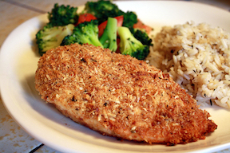

Garlic Chicken

Description
Simple to make, just dip and bake! Garlicky goodness
in a breaded chicken dish. Yum!
Ingredients
- 1/4 cup olive oil
- 2 cloves garlic, crushed
- 1/4 cup italian-seasoning bread crumbs
- 1/4 cup grated parmesan cheese
- 4 boneless, skinless chicken breasts
Instructions
- Preheat oven to 425 degrees F (220 degrees C).
- Heat olive oil and garlic in a small saucepan over
low heat until warmed, 1 to 2 minutes. Transfer garlic and oil to a shallow bowl.
- Combine bread crumbs and parmesan cheese in a separate shallow bowl
- Dip chicken breasts in the olive oil-garlic mixture using tongs; transfer
to bread crumb mixture and turn to evenly coat. Transfer coated chicken
to a shallow baking dish.
- Bake in the preheated oven until no longer pink and juices run clear, 30
to 35 minutes. An instant-read thermometer inserted into the center should
read at least 165 degrees F (74 degrees C).